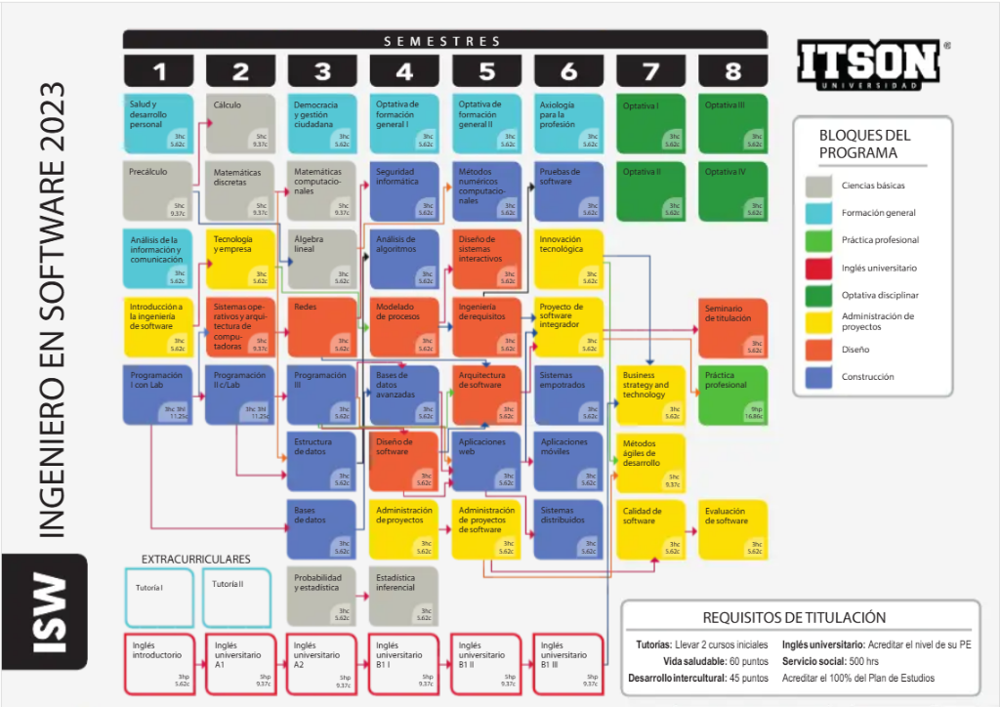

Mapa Curricular y Estructura Universitaria
Plan de Estudios 2023 ITSON
La carrera de Ingeniería en Software en el Instituto Tecnológico de Sonora se compone de 8 semestres diseñados para convertirte en un profesional completo y altamente demandado por la industria tecnológica.
Materias por semestre
Haz clic en cada semestre para expandir las asignaturas clave.
- Salud y desarrollo personal
- Precálculo
- Análisis de la información y comunicación
- Introducción a la ingeniería de software
- Programación I con laboratorio
- Tutoría I
- Inglés introductorio
- Cálculo
- Matemáticas discretas
- Tecnología y empresa
- Sistemas operativos y arquitectura de computadoras
- Programación II con laboratorio
- Tutoría II
- Inglés universitario A1
- Democracia y gestión ciudadana
- Matemáticas computacionales
- Álgebra lineal
- Redes
- Programación III
- Estructura de datos
- Bases de datos
- Probabilidad y estadística
- Inglés universitario A2
- Optativa de formación general I
- Seguridad informática
- Análisis de algoritmos
- Modelado de procesos
- Bases de datos avanzadas
- Diseño de software
- Administración de proyectos
- Estadística inferencial
- Inglés universitario B1 I
- Optativa de formación general II
- Métodos numéricos computacionales
- Diseño de sistemas interactivos
- Ingeniería de requisitos
- Arquitectura de software
- Aplicaciones web
- Administración de proyectos de software
- Inglés universitario B1 II
- Axiología para la profesión
- Pruebas de software
- Innovación tecnológica
- Proyecto de software integrador
- Sistemas empotrados
- Aplicaciones móviles
- Sistemas distribuidos
- Inglés universitario B1 III
- Optativa I
- Optativa II
- Business strategy and technology
- Métodos ágiles de desarrollo
- Calidad de software
- Optativa III
- Optativa IV
- Seminario de titulación
- Práctica profesional
- Evaluación de software
Requisitos oficiales de titulación
Criterios obligatorios establecidos por ITSON para la obtención del título profesional en Ingeniería en Software.
Acreditar los dos cursos iniciales de tutoría académica universitaria durante los primeros semestres.
Acumular al menos 60 puntos participando en actividades deportivas, recreativas y formativas de bienestar físico.
Acumular un mínimo de 45 puntos en eventos y programas de apreciación artística y cultural.
Acreditar el nivel oficial requerido por el programa educativo de la carrera hasta Inglés universitario B1 III.
Completar satisfactoriamente 500 horas reglamentarias de servicio en proyectos comunitarios o institucionales validados.
Aprobar el 100% de las asignaturas obligatorias y optativas correspondientes a la retícula curricular 2023.
Mapa curricular oficial ITSON 2023
Diagrama visual completo emitido por el Instituto Tecnológico de Sonora. Haz clic en la imagen o en el botón para explorarlo en alta definición.
